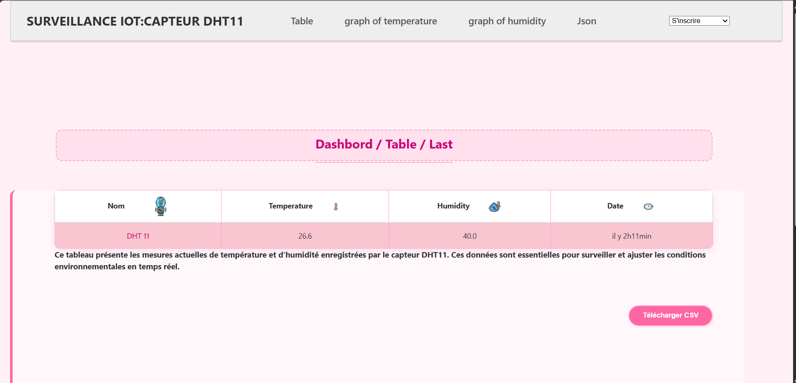

Projets techniques
Des projets académiques et personnels couvrant l'automatisation, la qualité, l'IoT industriel et la conception mécanique.
Automatisation et supervision d'un torréfacteur industriel
Développement d'une solution d'automatisation et de supervision sous Siemens TIA Portal V16, permettant le pilotage automatisé du procédé de torréfaction, avec gestion des recettes et régulation des paramètres essentiels.
- Programmation d'un automate Siemens S7-1500 sous TIA Portal V16
- Développement d'une interface HMI Siemens KTP700 pour la supervision et le suivi des alarmes
- Modes Manuel et Automatique avec gestion des recettes de production
- Régulation de la température et contrôle de la vitesse de brassage
Système sécurisé de gestion des recettes industrielles
Conception d'un système sécurisé de gestion des recettes de production sous Siemens TIA Portal V16, garantissant la protection des paramètres critiques par authentification et gestion des accès.
- Authentification par identifiant et mot de passe
- Gestion des niveaux d'accès selon les profils utilisateurs
- Génération automatique d'alarmes après plusieurs échecs de connexion
- Interface HMI dédiée à l'administration sécurisée des recettes
Prototype IoT pour le suivi des paramètres environnementaux
Conception d'un prototype IoT pour la surveillance en temps réel de la température et de l'humidité, avec transmission des données vers une application web et notifications automatiques en cas de dépassement de seuils.
- Système embarqué basé sur ESP8266 et capteur DHT11
- Application web avec Django REST API pour la visualisation des données
- Alertes automatiques via Gmail, WhatsApp et Telegram
- Conception du PCB sous EasyEDA et modélisation du boîtier sous Fusion 360

Automatisation d'une station de pompage électrique
Conception et automatisation d'une station de pompage conforme au Cahier des Prescriptions Spéciales (CPS), intégrant l'étude électrique, le dimensionnement et le pilotage automatisé du système.
- Schémas électriques sous QElectroTech
- Dimensionnement des câbles, protections et équipements via Caneco BT
- Programmation de l'automate et développement d'une interface de supervision
- Vérification de la conformité technique de l'installation
Système de Management de la Qualité (SMQ)
Développement d'un Système de Management de la Qualité pour un établissement d'enseignement supérieur, selon la norme ISO 9001:2015, pour structurer les processus et instaurer une démarche d'amélioration continue.
- Cartographie des processus stratégiques, opérationnels et supports
- Élaboration de la documentation qualité (politique, procédures, manuel qualité)
- Définition d'indicateurs de performance (KPI) pour le suivi des processus
- Approche basée sur les risques et propositions d'actions correctives
Modélisation mécanique sous CATIA V5
Réalisation de projets de conception mécanique assistée par ordinateur : modélisation de pièces, création d'assemblages et production de plans techniques conformes aux exigences de fabrication.
- Modélisation 3D de pièces mécaniques
- Réalisation d'assemblages fonctionnels
- Élaboration de plans cotés


Système de gestion des employés
Développement d'une application de gestion des employés basée sur une base de données relationnelle, pour l'organisation et le suivi des informations du personnel.
- Analyse des besoins fonctionnels
- Modélisation de la base de données selon la méthode Merise (MCD & MLD)
- Développement des requêtes SQL pour la gestion des données